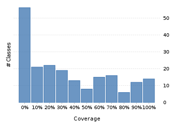
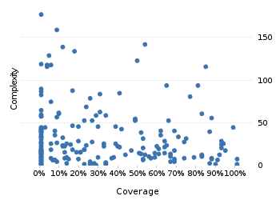

Project overview
Code coverage 228 classes, 6,371 / 21,538 elements
0.2958027729.6%
Test results 27 / 40 tests 1.25 secs
0.67567.5%
Code metrics
4,882
12,842
3,814
228
157
7
68,718
27,801
6,977
0.54
3.37
16.73
32.57
1.83
Class Coverage Distribution

Class Complexity

Coverage tree map
Generating Coverage Tree Map. Please wait...

Top 20 project risks
DateTimeFormatterBuilder.MatchingParser
BasicGJChronology
DateTimeZoneBuilder.PrecalculatedZone
DateTimeZoneBuilder
ZoneInfoCompiler
DateTimeZoneBuilder.OfYear
DateTimeFormatterBuilder.NumberFormatter
DateTimeZoneBuilder.RuleSet
ZoneInfoCompiler.DateTimeOfYear
ZoneInfoCompiler.Rule
DateTimeZoneBuilder.DSTZone
ZoneInfoCompiler.Zone
CachedDateTimeZone.Info
AssembledChronology.Fields
DateTimeParserBucket.SavedState
ImpreciseDateTimeField
DateTimeFormatterBuilder.Composite
ISODateTimeFormat.Constants
PeriodFormatterBuilder.SimpleAffix
DateTimeParserBucket
Most complex packages
| 1. | 0.099039289.9% |
org.joda.time 2458 |
| 2. | 0.284357228.4% |
org.joda.time.format 1496 |
| 3. | 0.490886749.1% |
org.joda.time.chrono 1239 |
| 4. | 0.311870131.2% |
org.joda.time.field 667 |
| 5. | 0.7721001577.2% |
org.joda.time.tz 535 |
Most complex classes
| 1. | 0.00% |
LocalDateTime 179 |
| 2. | 0.084188918.4% |
LocalDate 161 |
| 3. | 0.530534353.1% |
DateTimeZone 144 |
| 4. | 0.1190476211.9% |
DateTime 141 |
| 5. | 0.179723518% |
PeriodFormatterBuilder.FieldFormatter 136 |